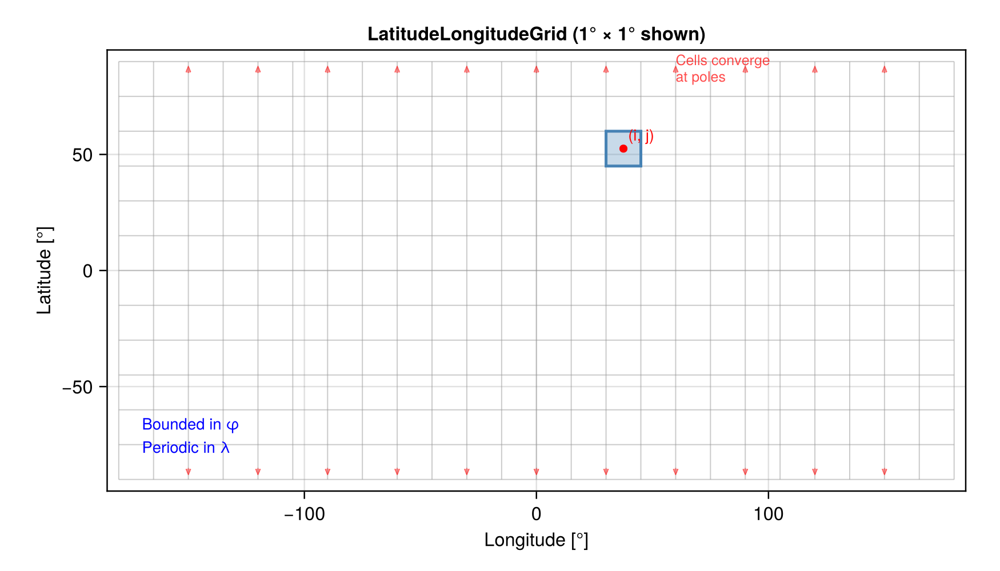
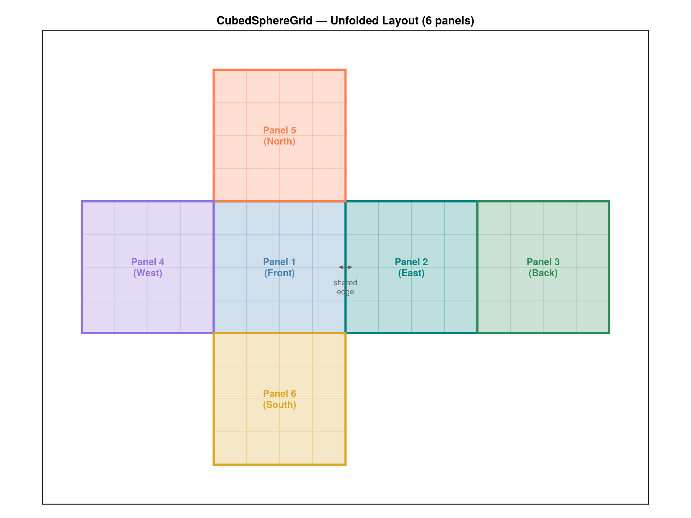
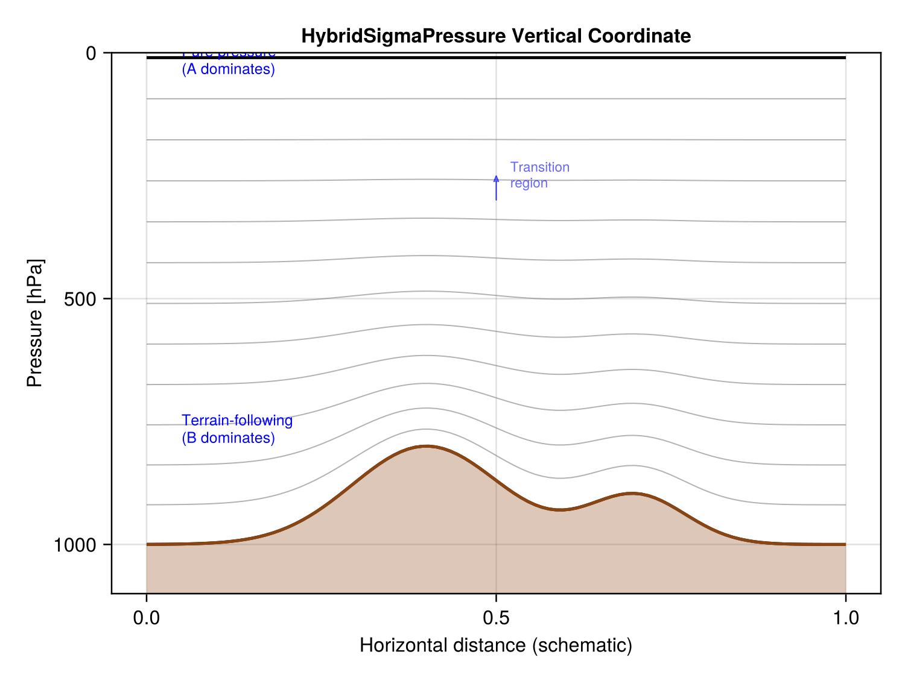
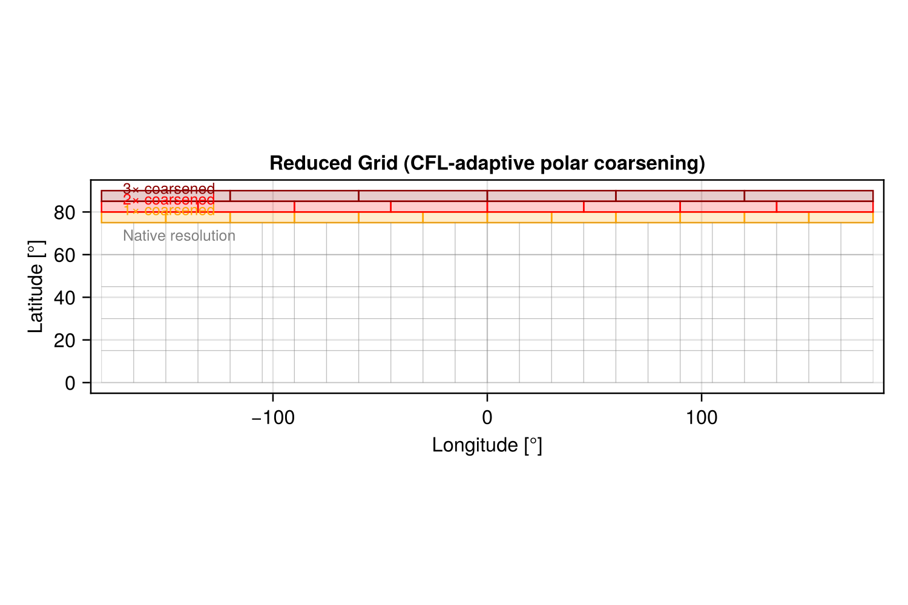

Grid Types
AtmosTransportModel supports multiple horizontal grid types, all sharing a common vertical coordinate. This page describes each grid type, when to use it, and how it is represented internally.
LatitudeLongitudeGrid
The workhorse grid for ERA5-driven simulations. Cells are defined by uniform spacing in longitude (λ) and latitude (φ), producing a regular grid that maps directly to standard NetCDF data layouts.

Properties
- Topology: Periodic in longitude, bounded in latitude
- Cell area:
A(j) = R² Δλ |sin(φ_{j+½}) − sin(φ_{j−½})|, varies with latitude only - Pole convergence: Cell widths shrink as
cos(φ)near the poles, requiring CFL subcycling or a reduced grid (see below) - Typical sizes: 360×180 (1°), 720×360 (0.5°), 1152×721 (0.25°)
Construction
using AtmosTransportModel.Grids
using AtmosTransportModel.IO: default_met_config, build_vertical_coordinate
config = default_met_config("era5")
vert = build_vertical_coordinate(config; FT=Float64)
grid = LatitudeLongitudeGrid(CPU();
FT = Float64,
size = (360, 180, n_levels(vert)),
longitude = (-180, 180),
latitude = (-90, 90),
vertical = vert)Accessors
| Function | Returns |
|---|---|
xnode(i, j, grid, Center()) | Cell-center longitude [°] |
ynode(i, j, grid, Center()) | Cell-center latitude [°] |
Δx(i, j, grid) | Zonal cell width [m] |
Δy(i, j, grid) | Meridional cell height [m] |
cell_area(i, j, grid) | Horizontal cell area [m²] |
grid_size(grid) | (Nx=..., Ny=..., Nz=...) |
CubedSphereGrid
A gnomonic cubed-sphere grid where the sphere is projected onto 6 cube faces. Each face (panel) is a uniform Cartesian grid in gnomonic coordinates, connected at shared edges with orientation-dependent halo exchange.

Properties
- Topology: 6 connected panels, no pole singularity
- Cell area: Varies smoothly across each panel (2D array per panel)
- Resolution naming: CN means N cells per panel edge (e.g., C720 = 720×720×6 = 3,110,400 columns)
- Equivalent resolution: C720 ≈ 12.5 km, C360 ≈ 25 km, C90 ≈ 100 km
- Panel connectivity: Stored in
PanelConnectivity, describing neighbor panel and orientation (0°/90°/180°/270° rotation) for each edge
Construction
grid = CubedSphereGrid(CPU();
FT = Float64,
Nc = 90, # cells per panel edge (C90)
vertical = vert) # Nz inferred from vertical coordinateData Layout
All 3D fields are stored as NTuple{6, Array{FT, 3}}, one array per panel. Each panel array has dimensions (Nc + 2Hp) × (Nc + 2Hp) × Nz, where Hp is the halo width (default 3). The interior is at indices [Hp+1:Hp+Nc, Hp+1:Hp+Nc, :].
Halo Exchange
Before each advection sweep, fill_panel_halos! copies interior edge data from neighboring panels into halo regions, respecting the panel orientation:
fill_panel_halos!(tracer_panels, grid)This is handled automatically inside strang_split_massflux! for cubed-sphere grids.
HybridSigmaPressure (Vertical Coordinate)
Both grid types share the same vertical coordinate: hybrid sigma-pressure levels defined by A and B coefficients at level interfaces.

Definition
Pressure at level interface k is:
p(k) = A(k) + B(k) × pₛwhere pₛ is surface pressure. The A/B coefficients are loaded from TOML files in config/ for each met source:
| Met Source | Levels | Coefficient File |
|---|---|---|
| ERA5 | 137 | config/era5_L137_coefficients.toml |
| GEOS-FP | 72 | config/geos_L72_coefficients.toml |
| MERRA-2 | 72 | config/geos_L72_coefficients.toml |
Behavior by Altitude
- Near the surface (large B): levels follow terrain (sigma coordinate)
- Upper atmosphere (B → 0): levels are pure pressure surfaces
- Transition region: smooth blend controlled by the A/B ratio
Level Thickness
The pressure thickness of level k is:
Δp(k) = [A(k+1) − A(k)] + [B(k+1) − B(k)] × pₛThis is computed by level_thickness(vert, k, ps) and used to derive air mass:
m(i, j, k) = Δp(i, j, k) × area(i, j) / gConstruction
# From a met source config (recommended)
config = default_met_config("era5")
vert = build_vertical_coordinate(config; FT=Float64)
# With a level subset
vert_subset = build_vertical_coordinate(config; FT=Float64, level_range=50:137)
# Manual construction from A/B vectors
vert = HybridSigmaPressure(A_interfaces, B_interfaces)Reduced Grid
An optimization for the LatitudeLongitudeGrid that clusters (coarsens) cells in the zonal direction near the poles. This prevents the CFL condition from requiring excessive subcycling at high latitudes, where cells become very narrow.

How It Works
At each latitude band, cells are grouped into clusters. Within a cluster, tracer concentrations are averaged before advection, effectively treating the cluster as a single wider cell. After advection, values are uniformly redistributed.
The cluster size at latitude φ is approximately ⌈1 / cos(φ)⌉, meaning:
| Latitude | Cluster Size | Effective Δλ (at 1°) |
|---|---|---|
| 0° – 60° | 1 (no reduction) | 1° |
| 75° | ~4 | ~4° |
| 85° | ~11 | ~11° |
| 89° | ~57 | ~57° |
Enabling
The reduced grid is enabled automatically when Δλ ≤ 1°:
grid = LatitudeLongitudeGrid(CPU();
size = (360, 180, 88),
vertical = vert,
use_reduced_grid = :auto) # default — enabled for fine gridsOverride with use_reduced_grid = true (always on) or false (always off).
Performance Impact
Without the reduced grid at 1° resolution, X-advection near the poles requires up to 57 subcycles per step. With the reduced grid, the maximum subcycle count drops to ~4, giving a ~10–15× speedup in the X-advection phase.
Grid Comparison
| Feature | LatitudeLongitudeGrid | CubedSphereGrid |
|---|---|---|
| Pole singularity | Yes (cells converge) | No |
| Data layout | 3D array (Nx×Ny×Nz) | NTuple{6, Array} |
| Cell area | 1D (varies with lat only) | 2D (per panel) |
| Boundary conditions | Periodic λ, bounded φ | Panel halo exchange |
| Native met data | ERA5, MERRA-2 (lat-lon) | GEOS-FP (cubed-sphere) |
| Reduced grid | Available | Not needed |
| GPU support | Full | Full |